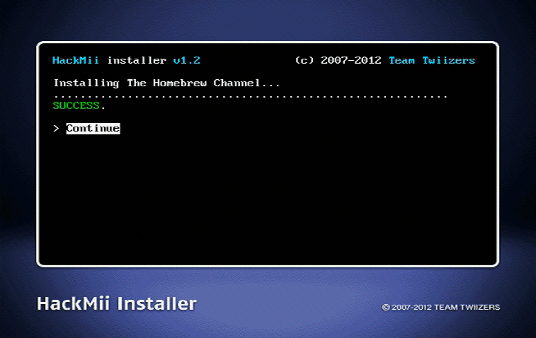

Installation de chaîne homebrew et de BootMii
Si vous avez besoin d’aide pour quoi que ce soit concernant ce tutoriel, veuillez rejoindre le serveur RiiConnect24 Discord (recommandé) ou [ envoyez-nous un e-mail à [email protected] ](mailto: support @ riiconnect24 .net).

La chaîne homebrew permet de lancer des applications homebrew. BootMii est un logiciel permettant de faire une backup de la mémoire NAND de votre console, et si il est installé dans boot2, il permet une protection contre le brick.
Instructions
-
Vous allez voir un avertissement contre les arnaques. Attendez 30 secondes pour voir le texte « Press 1 to continue » apparaître, puis appuyez sur le bouton 1.

-
Quand le programme d’installation HackMii apparaît, vous pouvez installer la chaîne homebrew ainsi que BootMii.

-
Appuyez sur Continue, choisissez Chaîne homebrew puis sélectionnez Install.

-
Appuyez sur Continue une fois l’installation terminée. 
- Quand installé, appuyez sur “back” et allez vers Bootmii.
- Si l’écran vous dit que vous pouvez installer BootMii en tant que boot2, faites-le. Cela offre la meilleur protection possible contre le brick. Ignorez cette étape si l’option ne s’affiche pas, dans ce cas, votre Wii n’est pas l’un des modèles précédents qui la prend en charge.
- Installez BootMii en tant qu’IOS, même si vous avez déjà installé BootMii en tant que boot2 à l’étape précédente. Si vous n’avez pas pu installer BootMii en tant que boot2, cela vous permettra toujours de créer une sauvegarde NAND.
Si vous n’avez pas de carte SD, vous ne pouvez pas installer ni utiliser BootMii et ne pourrez donc pas utiliser les avantages mentionnés. Vous pourrez toujours l’installer plus tard.

- Une fois terminé, sélectionnez
Continuer, puis sélectionnezQuitterpour accéder la chaîne homebrew
Lecture nécessaire
Vous pouvez maintenant utiliser la chaîne homebrew pour lancer des applications homebrew. Open Shop Channel est une seule destination pour installer du homebrew, ce que vous allez apprendre plus tard dans se guide.
Voici une astuce - quand entrain d’installer des applications homebrew sur votre card SD or périphériques USB, votre structure des dossiers doit ressembler sa:
AppName1 et AppName2 sont des noms marqueur. Ne pas mettre multiple apps dossier dans le dossier apps lui-même.
‚îÉ ‚î£ üìÇ AppName1
‚îÉ ‚îÉ ‚î£ üìÑ icon.png
Conseil : vous pouvez savoir si BootMii est installé en tant que boot2 sur une Wii si votre lecteur de disque clignote très brièvement, seulement après le flash immédiat qui se produit lorsque vous appuyez sur le bouton POWER.